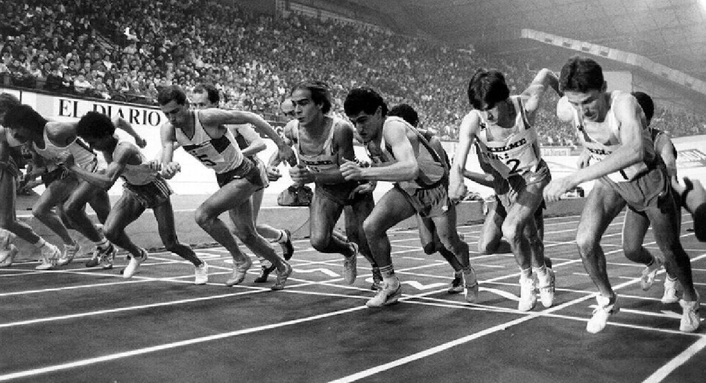

-Caça por Persistência: Humanos não eram os animais mais rápidos, mas possuíam uma vantagem única: a capacidade de suar e resfriar o corpo eficientemente. Isso permitia que perseguissem presas muito mais velozes por horas, sob o calor, até que o animal entrasse em colapso por exaustão.
-Fuga e Defesa: Correr era a forma mais eficaz de escapar de predadores e de se mover rapidamente entre territórios em busca de segurança e recursos. Essa capacidade de correr por longos períodos foi fundamental para a evolução e a sobrevivência da nossa espécie.
